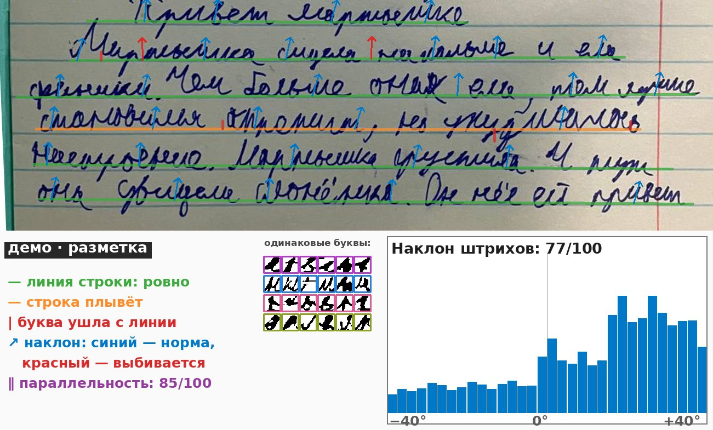

Зелёные/красные линии — линия строки, стрелки — наклон штрихов, внизу — примеры одинаковых букв, гистограмма — распределение наклона.
Буквы смотрят в одну сторону — наклон держится стабильно.
Разброс наклона вертикальных штрихов ±6° (средний наклон +11°).Наклонные штрихи почти параллельны — палочки, петли и соединители держат один угол.
В пределах ±3° от среднего угла идут 27% штрихов, межквартильный разброс 11° (штрихов: 89, средний наклон +26°).Есть буквы заметно выше или ниже соседних.
Высота строчных (x-высота) ≈ 34 px, разброс 39%.Одна и та же буква местами пишется по-разному: то шире, то уже, то с петлёй, то без.
Повторяющиеся буквы и их части: групп 13, экземпляров 92, совпадение форм 0.64 из 1.Слова стоят на одной линии, строки не уползают.
Отклонение букв от линии строки 18% высоты буквы, увод строки 0.3× высоты.Пробелы между словами одинаковые — текст легко читать.
Средний пробел между словами 1.1× высоты буквы, разброс 31%.Строки идут ровными «рельсами».
Расстояние между строками ≈ 2.0× высоты буквы, разброс 15%.Толщина линии стабильная — рука движется ровно.
Оценка по толщине линии на фото: разброс 16%.Элементы букв одинаковые и отдельные — читается легко.
Регулярность элементов письма (разброс размеров 40%, слипшихся участков 0.0%).Автоматическая оценка по геометрии письма на фото (наклон, параллельность штрихов, высота, однообразие букв, строка, пробелы, интервал, толщина линии, чёткость). Это не графология и не оценка личности; результат зависит от качества снимка. Точный разбор — у тренера.